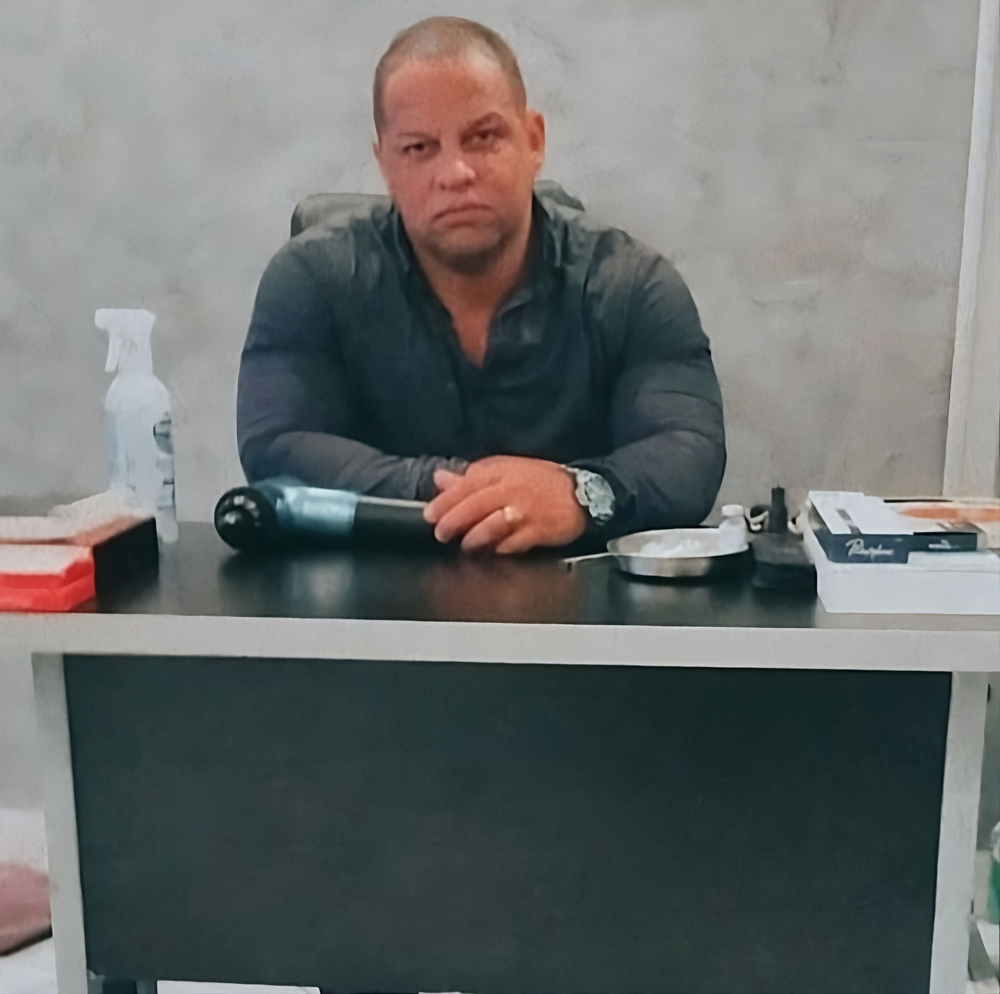
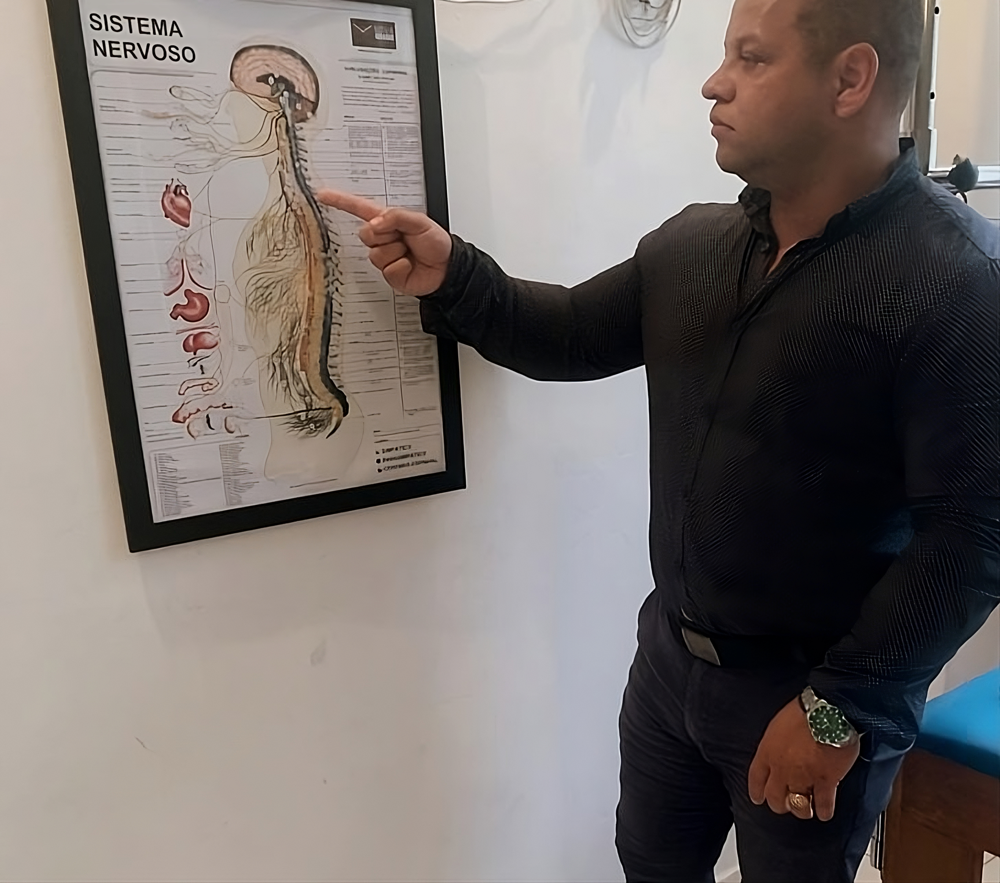

QuiroClínica
A maneira inteligente de tratar dores nas costas

Dr. Vinícius 12 anos de experiência em dores com a Quiropraxia.
A maneira inteligente de tratar dores nas costas
Dr. Vinícius 12 anos de experiência em dores com a Quiropraxia.
Dr.Marcus Vinicius de Paula formado em Quiropraxia pelo IBraqui (Instituto Brasileiro de Quiropraxia) em São Paulo desde 2011. Aonde se busca a excelência e eficácia no diagnóstico, tratamento e prevenção na síndromes e doenças relacionadas ao Sistema Músculo-esquelético.
Treinamento e Mentoria. Caso você seja um profissional, entre em contato pois posso lhe passar todo o passo a passo e encurtar sua curva para o sucesso!
O alinhamento correto da sua Coluna Vertebral leva bem estar para todo seu corpo.
Dor nas costas é um dos sinais mais óbvios de que é a hora de uma visita ao Quiropraxista

Excelência em Pediatria!

Atendimento de vários atletas que buscam sempre cuidar e prevenir lesões. Se você também é um atleta, venha fazer parte do nosso time!

Entre em contato pelo nosso whatsApp: